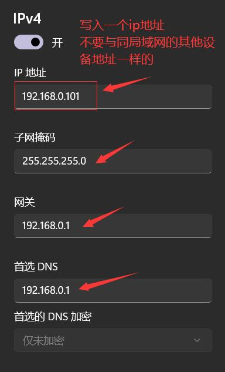
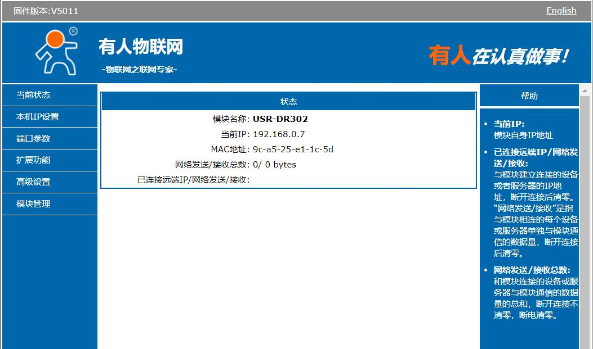
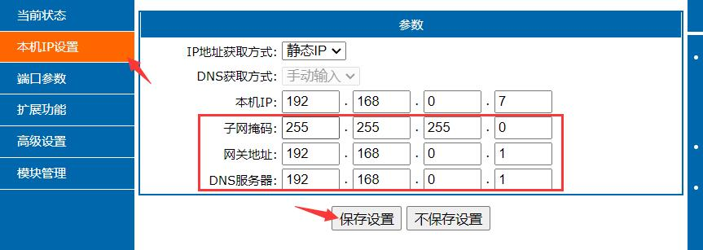
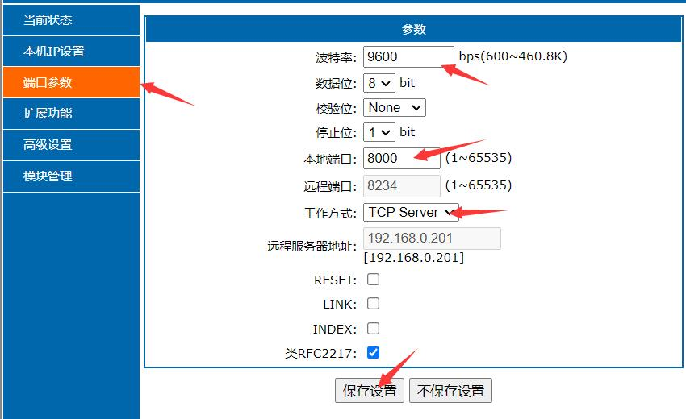
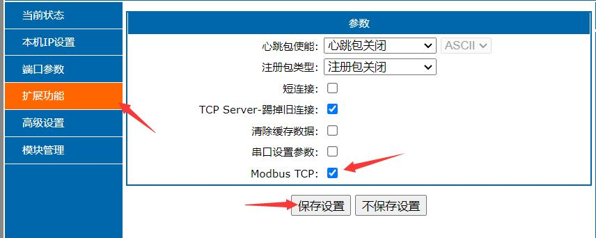
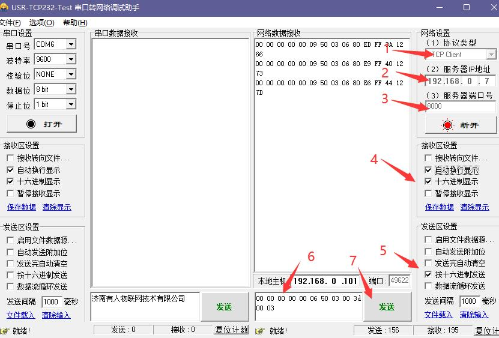

如何通过USR-DR302与485传感器建立连接
使用实验室的485转网口的转换器，完成485传感器的tcp通讯。
实验设备：
- 通讯转换模块（USR-DR302）
- 485传感器（WT61-PC485)
连接线路
正确连接转换器上的接口：
1 | PC(网口)<----网口---->转换器（USR-DR302）<----A/T和B/R---->485传感器（WT61-PC485） |
正确连接信号线和电源线，信号灯会进行闪烁。
配置PC端IP
打开电脑的网络设置，设置以太网Ipv4分配。

配置通讯转换器（USR-DR302）
在浏览器上输入ip地址192.168.0.7会弹出一个页面。

如果没有弹出页面：
- 一种可能是线路连接问题，检查一遍线路。
- 还有一种可能是将设备模块的
默认ip被修改了，可以通过串口AT指令查询或者重置。
配置本机ip设置

除了ip地址不同（不冲突，建议默认），其他的子网掩码，网关地址，DNS服务器和在PC配置的IPv4一样。完成后，重启模块。
配置端口参数

1 | 波特率: 9600 #所使用的传感器在这个频段，WT61-PC485在这个频段 |
完成后，重启模块
配置扩散功能
打开Modbus TCP功能

完成后，重启模块
测试通讯
打开TCP串口调试助手，或者网络调试助手。

按图示操作，中间区域出现所要接收的报文，说明通讯成功。
1 | 协议类型: TCP Client |